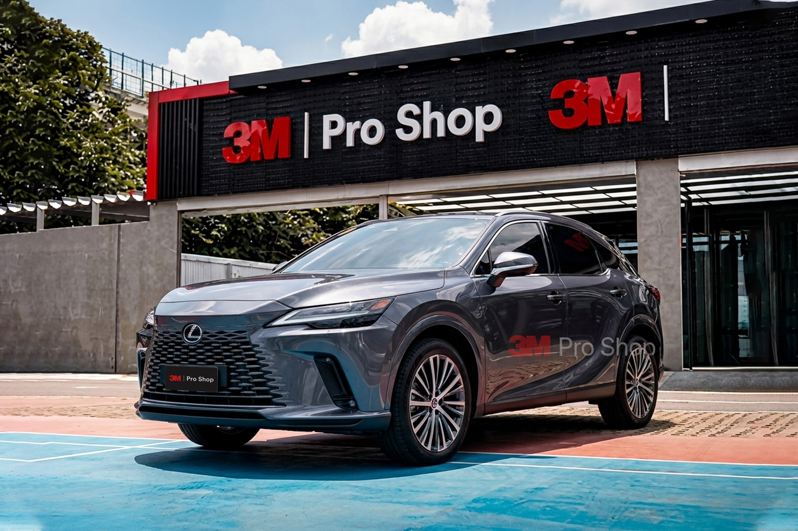

Nhiều chủ xe muốn kính lái đủ trong để lái đêm an tâm, nhưng chưa cần chi cho gói Crystalline CR BLK dùng nhiều vị trí CR BLK hơn. 3M Crystalline Hybrid sinh ra cho đúng nhóm này: kính lái dùng CR BLK 60/50, kính sườn và kính lưng dùng NR 25/15/5. Đây là cấu hình phối mã phim theo từng vị trí kính, không phải một mã phim mới. Bài viết trình bày bảng giá, thông số, cách chọn cấu hình và địa chỉ thi công kèm bảo hành điện tử 3M 10 năm.
Trả lời nhanh: 3M Crystalline Hybrid là cấu hình dán phim cách nhiệt 3M kết hợp kính lái CR BLK 60/50 với các kính sườn và kính lưng dùng NR 25/15/5. Cấu hình này phù hợp với khách muốn giữ độ trong và khả năng quan sát tốt ở kính lái, đồng thời tối ưu chi phí hơn so với gói CR BLK toàn xe.

Tóm tắt cấu hình 3M Crystalline Hybrid#
| Vị trí kính | Mã phim trong gói |
|---|---|
| Kính lái | CR BLK 60 hoặc CR BLK 50 |
| Kính sườn trước | NR 25 / NR 15 / NR 5 |
| Kính sườn giữa | NR 25 / NR 15 / NR 5 |
| Kính lưng | NR 25 / NR 15 / NR 5 |
| Định vị | Cao hơn Ceramic Hybrid ở kính lái, tối ưu chi phí hơn gói Crystalline CR BLK dùng nhiều vị trí CR BLK hơn |
| Bảo hành | Bảo hành điện tử 3M 10 năm khi thi công và kích hoạt đúng quy trình |
3M Crystalline Hybrid là gì?#
3M Crystalline Hybrid là cấu hình dán phim cách nhiệt ô tô 3M sử dụng mã CR BLK cho kính lái và mã NR mới cho các vị trí kính còn lại. Trong bảng giá 3M/365Group cập nhật 06/2026, gói Crystalline Hybrid được cấu hình với kính lái CR BLK 60/50, kính sườn trước NR 25/15/5, kính sườn giữa NR 25/15/5 và kính sau NR 25/15/5.
Hiểu đúng: Đây là cấu hình phối mã phim theo từng vị trí kính, không phải một mã phim đơn lẻ. Không nên hiểu Crystalline Hybrid là một dòng phim mới thay thế hoàn toàn cho CR BLK hoặc NR.
Trong hệ phim 3M tại Auto365, Crystalline Hybrid đứng giữa 3M Ceramic Hybrid và 3M Crystalline CR BLK.
Bảng giá phim cách nhiệt 3M Crystalline Hybrid#
| Vị trí / Dòng xe | Cấu hình Crystalline Hybrid |
|---|---|
| Kính trước / kính lái | CR BLK 60/50 — 5.700.000 VNĐ |
| Kính sườn trước | NR 25/15/5 — 1.700.000 VNĐ |
| Kính sườn giữa | NR 25/15/5 — 1.700.000 VNĐ |
| Kính sau / kính lưng | NR 25/15/5 — 1.900.000 VNĐ |
| Trọn gói Minicar | 9.000.000 VNĐ |
| Trọn gói Sedan | 10.800.000 VNĐ |
| Trọn gói SUV | 12.500.000 VNĐ |
Bảng giá áp dụng từ 06/2026 cho đến khi có thông báo mới. Giá minicar áp dụng cho các dòng xe như VinFast VF 3, Wuling Hongguang Mini EV, Bestune Xiaoma, VinFast Minio Green và các xe có kích thước tương đương. Cửa sổ trời nhỏ tính bằng một kính sườn, cửa sổ trời panorama tính bằng một kính lái.
Xem thêm bảng giá phim cách nhiệt 3M đầy đủ cho các dòng khác.
Xe của bạn phù hợp gói Minicar, Sedan hay SUV?
Gửi dòng xe để được xác nhận cấu hình kính và báo giá trước khi đến thi công.
Thông số kỹ thuật các mã phim trong gói Crystalline Hybrid#
| Mã phim | TSER | VLT | UVR | Giảm lóa | IRR | Vị trí thường dùng |
|---|---|---|---|---|---|---|
| CR BLK 60 | 54% | 57% | 99.9% | 22% | 97% | Kính lái cần sáng |
| CR BLK 50 | 56% | 48% | 99.9% | 34% | 98% | Kính lái cân bằng sáng/chống nóng |
| NR 25 | 59% | 29% | 99% | 68% | 86% | Kính sườn/kính lưng cân bằng |
| NR 15 | 65% | 14% | 99% | 84% | 86% | Kính sườn/kính lưng riêng tư hơn |
| NR 5 | 69% | 7% | 99% | 93% | 91% | Kính lưng hoặc vị trí cần tối hơn |
Ghi chú: Dữ liệu được hiển thị là hiệu suất ước tính của phim khi dán lên kính ô tô màu xanh lá cây dày 1/4" (6mm) với 73% VLT. Dữ liệu chỉ để tham khảo và có thể thay đổi theo loại kính, tình trạng kính và điều kiện đo thực tế.
Nguồn số liệu: Bảng giá và thông số kỹ thuật phim cách nhiệt 3M, 365Group/Auto365, cập nhật 06/2026.
Vì sao 3M Crystalline Hybrid dùng CR BLK cho kính lái?#
Kính lái là vị trí ảnh hưởng trực tiếp đến quan sát ban ngày, ban đêm, khi đi mưa và khi chạy cao tốc. Vì vậy, cấu hình Crystalline Hybrid ưu tiên dùng CR BLK 60 hoặc CR BLK 50 cho kính lái để giữ độ xuyên sáng tốt, hạn chế cảm giác tối kính, đồng thời vẫn có khả năng giảm nhiệt và loại bỏ tia hồng ngoại ở mức cao.
| Mã kính lái | Phù hợp với ai |
|---|---|
| CR BLK 60 | Người ưu tiên kính lái sáng, dễ quan sát ban đêm |
| CR BLK 50 | Người muốn kính lái đầm hơn, chống nóng tốt hơn nhưng vẫn giữ độ sáng tương đối |
Vì sao các kính còn lại dùng NR mới?#
Các vị trí kính sườn và kính lưng thường cần khả năng giảm nắng, giảm chói, tăng riêng tư và tối ưu chi phí. Dòng NR mới của 3M có nhiều mức VLT như NR 25, NR 15, NR 5, giúp kỹ thuật viên dễ phối theo nhu cầu sử dụng thực tế của từng xe.
| Vị trí kính | Mã nên chọn | Lý do |
|---|---|---|
| Kính sườn trước | NR 25 hoặc NR 15 | Cân bằng quan sát gương chiếu hậu và giảm nắng |
| Kính sườn giữa | NR 15 hoặc NR 5 | Tăng riêng tư cho hàng ghế sau |
| Kính lưng | NR 15 hoặc NR 5 | Giảm nắng sau xe, tăng thẩm mỹ |
| Xe gia đình có trẻ nhỏ | NR 15 / NR 5 phía sau | Hạn chế nắng gắt vào khoang sau |
| Xe thường đi đêm | Hạn chế quá tối ở kính sườn trước | Giữ khả năng quan sát gương |
3M Crystalline Hybrid phù hợp với xe nào?#
| Dòng xe | Có phù hợp không? | Gợi ý |
|---|---|---|
| Minicar / xe điện nhỏ | Rất phù hợp | Tối ưu chi phí, kính lái vẫn sáng |
| Sedan | Phù hợp | Cân bằng chống nóng và thẩm mỹ |
| SUV / Crossover | Rất phù hợp | Khoang kính lớn, cần giảm nhiệt tốt |
| Xe gia đình | Phù hợp | Có thể chọn NR 15/5 cho khoang sau |
| Xe dịch vụ | Phù hợp nếu cần chi phí hợp lý | Nên ưu tiên kính lái sáng |
| Xe sang | Phù hợp, có thể cân nhắc 3M Crystalline CR BLK Pro nếu muốn cấu hình cao hơn | Tùy ngân sách |
So sánh 3M Crystalline Hybrid và 3M Ceramic Hybrid#
| Tiêu chí | 3M Crystalline Hybrid | 3M Ceramic Hybrid |
|---|---|---|
| Kính lái | CR BLK 60/50 | NR 35/25 |
| Kính sườn/lưng | NR 25/15/5 | NR 25/15/5 |
| Giá minicar | 9.000.000 VNĐ | 5.900.000 VNĐ |
| Giá sedan | 10.800.000 VNĐ | 7.900.000 VNĐ |
| Giá SUV | 12.500.000 VNĐ | 9.500.000 VNĐ |
| Định vị | Cao hơn Ceramic Hybrid | Dễ tiếp cận hơn |
| Phù hợp | Khách muốn kính lái cao cấp hơn | Khách cần tối ưu chi phí |
| Điểm mạnh | Kính lái dùng CR BLK, định vị cao hơn Ceramic Hybrid ở vị trí kính lái | Giá tốt, cấu hình dễ chọn |
Nếu ưu tiên kính lái sáng, cao cấp và dễ quan sát hơn, nên chọn 3M Crystalline Hybrid. Nếu ưu tiên chi phí tốt hơn nhưng vẫn muốn dùng phim 3M chính hãng, 3M Ceramic Hybrid là lựa chọn dễ tiếp cận hơn.
So sánh 3M Crystalline Hybrid và 3M Crystalline CR BLK#
| Tiêu chí | Crystalline Hybrid | Crystalline CR BLK |
|---|---|---|
| Cấu hình | Kính lái CR BLK, sườn/lưng NR | Nhiều vị trí dùng CR BLK |
| Giá sedan | 10.800.000 VNĐ | 14.800.000 VNĐ |
| Giá SUV | 12.500.000 VNĐ | 17.600.000 VNĐ |
| Chi phí | Tối ưu hơn | Cao hơn |
| Trải nghiệm kính lái | Vẫn giữ CR BLK | CR BLK đồng bộ nhiều vị trí hơn |
| Phù hợp | Khách muốn cân bằng | Khách muốn cấu hình CR BLK cao hơn |
Crystalline Hybrid là lựa chọn nằm giữa Ceramic Hybrid và 3M Crystalline CR BLK. Đây là cấu hình hợp lý cho khách muốn nâng cấp kính lái bằng CR BLK nhưng chưa cần chi phí của gói Crystalline CR BLK dùng nhiều vị trí CR BLK hơn.
So sánh 3M Crystalline Hybrid và 3M Crystalline Hybrid Pro#
| Tiêu chí | Crystalline Hybrid | Crystalline Hybrid Pro |
|---|---|---|
| Kính lái | CR BLK 60/50 | CR BLK 40 |
| Kính sườn/lưng | NR 25/15/5 | NR 25/15/5 |
| Giá minicar | 9.000.000 VNĐ | 9.800.000 VNĐ |
| Giá sedan | 10.800.000 VNĐ | 11.600.000 VNĐ |
| Giá SUV | 12.500.000 VNĐ | 13.300.000 VNĐ |
| Định vị | Kính lái sáng hơn, dễ tiếp cận hơn | Kính lái đầm hơn, chống nắng tốt hơn |
| Phù hợp | Người ưu tiên quan sát sáng, lái đêm nhiều | Người muốn kính lái tối hơn và giảm chói nhiều hơn |
Crystalline Hybrid phù hợp với khách muốn kính lái sáng hơn nhờ CR BLK 60/50. Crystalline Hybrid Pro phù hợp với khách thích kính lái đầm hơn vì kính lái dùng CR BLK 40.
Nên chọn cấu hình Crystalline Hybrid nào?#
Ưu tiên sáng, dễ lái ban đêm
- Kính lái
- CR BLK 60
- Kính sườn trước
- NR 25
- Kính sườn giữa
- NR 15
- Kính lưng
- NR 15
Người mới dán phim, thường lái ban đêm, xe gia đình.
Cân bằng chống nóng và riêng tư
- Kính lái
- CR BLK 50
- Kính sườn trước
- NR 25 hoặc NR 15
- Kính sườn giữa
- NR 15
- Kính lưng
- NR 15 hoặc NR 5
Sedan, SUV và xe sử dụng hằng ngày.
Khoang sau riêng tư hơn
- Kính lái
- CR BLK 50
- Kính sườn trước
- NR 25
- Kính sườn giữa
- NR 5
- Kính lưng
- NR 5
Xe gia đình có trẻ nhỏ, thường đậu ngoài nắng hoặc cần kính sau tối hơn.
Chưa biết nên chọn CR BLK 60 hay CR BLK 50?
Auto365 tư vấn theo thói quen lái xe, kính nguyên bản và nhu cầu riêng tư của từng vị trí kính.
Khi nào nên chọn 3M Crystalline Hybrid?#
Nên chọn nếu:
- Muốn kính lái dùng CR BLK thay vì NR.
- Muốn chi phí dễ chịu hơn CR BLK toàn xe.
- Muốn xe có cấu hình phim 3M chính hãng, bảo hành điện tử 10 năm.
- Muốn cân bằng giữa chống nóng, độ trong, riêng tư và thẩm mỹ.
- Đang dùng xe sedan, SUV, minicar hoặc xe điện cần giảm nhiệt khoang cabin.
Khi nào chưa cần chọn Crystalline Hybrid?#
Chưa cần chọn nếu:
- Ngân sách ưu tiên thấp hơn, khi đó Ceramic Hybrid có thể phù hợp hơn.
- Muốn toàn bộ xe dùng CR BLK đồng bộ, khi đó nên cân nhắc Crystalline CR BLK hoặc CR BLK Pro.
- Thường xuyên lái đêm ở khu vực thiếu sáng và muốn kính lái thật sáng, nên ưu tiên CR BLK 60 thay vì CR BLK 50.
- Không muốn kính sườn/lưng quá tối, không nên chọn NR 5 cho các vị trí cần quan sát nhiều.
Khách cần tham khảo thêm các dòng phim khác trong hệ 3M có thể xem 3M Ceramic IR.
3M Crystalline Hybrid có ảnh hưởng GPS, VETC, điện thoại không?#
Gói 3M Crystalline Hybrid sử dụng CR BLK cho kính lái và NR cho các kính còn lại. Khi tư vấn và thi công, kỹ thuật viên cần kiểm tra vị trí dán thẻ VETC, anten, camera hành trình, cảm biến, màn hình HUD nếu có và các thiết bị gắn kính để hạn chế ảnh hưởng trong quá trình sử dụng. Với các xe có nhiều thiết bị điện tử trên kính, khách hàng nên trao đổi trước khi chọn mã phim.
Quy trình dán 3M Crystalline Hybrid tại Auto365.vn - Trụ Sở Chính#
- Tiếp nhận xe và kiểm tra tình trạng kính.
- Tư vấn mã phim theo từng vị trí: kính lái, kính sườn trước, kính sườn giữa, kính lưng và cửa sổ trời nếu có.
- Che chắn nội thất, taplo, tapi cửa và các khu vực điện tử gần kính.
- Vệ sinh kính, xử lý bụi, keo cũ hoặc phim cũ nếu có.
- Cắt phim theo từng vị trí kính.
- Sấy định hình phim đối với các vị trí kính cong.
- Thi công phim lên kính bằng dung dịch chuyên dụng.
- Kiểm tra mép phim, bọt nước, bụi, độ bám và hoàn thiện bàn giao.
- Hướng dẫn khách hàng kiểm tra bảo hành điện tử 3M và lưu ý sau khi dán.
Lưu ý sau khi dán phim 3M Crystalline Hybrid#
Sau khi dán phim, khách hàng nên hạn chế lên xuống kính trong thời gian đầu theo hướng dẫn của kỹ thuật viên. Một số vệt nước, hơi mờ nhẹ hoặc bọt nước nhỏ có thể xuất hiện trong giai đoạn đầu và sẽ giảm dần khi phim ổn định. Không nên tự cạy mép phim hoặc dùng hóa chất mạnh để vệ sinh kính.
Đặt lịch dán 3M Crystalline Hybrid
Kiểm tra kính, tư vấn mã phim từng vị trí và hỗ trợ kích hoạt bảo hành điện tử 3M sau khi hoàn thiện.
Câu hỏi thường gặp về 3M Crystalline Hybrid#
3M Crystalline Hybrid là phim gì?
3M Crystalline Hybrid là cấu hình dán phim cách nhiệt 3M kết hợp kính lái CR BLK 60/50 với các kính sườn và kính lưng dùng NR 25/15/5. Đây là cấu hình phối mã phim theo từng vị trí kính, không phải một mã phim đơn lẻ.
3M Crystalline Hybrid giá bao nhiêu?
Theo bảng giá 365Group/Auto365 cập nhật 06/2026, 3M Crystalline Hybrid có giá 9.000.000 VNĐ cho minicar, 10.800.000 VNĐ cho sedan và 12.500.000 VNĐ cho SUV. Giá lẻ kính lái CR BLK 60/50 là 5.700.000 VNĐ.
3M Crystalline Hybrid khác gì Ceramic Hybrid?
Crystalline Hybrid dùng CR BLK 60/50 cho kính lái, còn Ceramic Hybrid dùng NR 35/25 cho kính lái. Vì vậy Crystalline Hybrid có định vị cao hơn ở vị trí kính lái, trong khi Ceramic Hybrid có giá dễ tiếp cận hơn.
3M Crystalline Hybrid khác gì CR BLK toàn xe?
Crystalline Hybrid chỉ dùng CR BLK cho kính lái và dùng NR cho các kính còn lại, giúp tối ưu chi phí. CR BLK toàn xe dùng nhiều mã CR BLK hơn nên giá cao hơn và phù hợp với khách muốn cấu hình đồng bộ cao hơn.
Kính lái nên chọn CR BLK 60 hay CR BLK 50?
CR BLK 60 phù hợp với người ưu tiên kính lái sáng và dễ quan sát ban đêm. CR BLK 50 phù hợp với người muốn kính lái đầm hơn, giảm nắng tốt hơn nhưng vẫn giữ độ xuyên sáng tương đối.
3M Crystalline Hybrid có bảo hành không?
Phim cách nhiệt 3M trong cấu hình Crystalline Hybrid được bảo hành chính hãng 10 năm khi thi công đúng quy trình và kích hoạt bảo hành điện tử 3M. Khách hàng nên kiểm tra thông tin bảo hành sau khi dán.
Xe điện có nên dán 3M Crystalline Hybrid không?
Có thể cân nhắc. Xe điện thường có diện tích kính lớn và khoang cabin dễ hấp thụ nhiệt khi đậu ngoài nắng. Crystalline Hybrid giúp tối ưu kính lái bằng CR BLK và dùng NR cho các vị trí còn lại để cân bằng chi phí.
Dán 3M Crystalline Hybrid ở đâu?
Khách hàng có thể dán phim cách nhiệt ô tô cấu hình 3M Crystalline Hybrid tại Auto365.vn - Trụ Sở Chính hoặc hệ thống thuộc 365Group. Khi dán, nên yêu cầu tư vấn mã phim theo từng vị trí kính và kiểm tra bảo hành điện tử 3M.
3M Crystalline Hybrid Pro khác Crystalline Hybrid gì?
Crystalline Hybrid dùng CR BLK 60/50 cho kính lái, còn Crystalline Hybrid Pro dùng CR BLK 40 cho kính lái. Vì vậy bản Hybrid Pro có kính lái đầm hơn và giá cao hơn, trong khi bản Hybrid dễ tiếp cận hơn với khách muốn kính lái sáng.
3M Crystalline Hybrid có ảnh hưởng VETC, GPS hoặc điện thoại không?
Khi dán 3M Crystalline Hybrid, kỹ thuật viên cần kiểm tra vị trí thẻ VETC, anten, camera hành trình, cảm biến và các thiết bị gắn kính để hạn chế ảnh hưởng trong quá trình sử dụng. Khách nên trao đổi trước nếu xe có nhiều thiết bị điện tử trên kính.
Sau khi dán 3M Crystalline Hybrid cần lưu ý gì?
Sau khi dán phim, khách hàng nên hạn chế lên xuống kính trong thời gian đầu theo hướng dẫn của kỹ thuật viên. Nếu có hơi mờ nhẹ, vệt nước hoặc bọt nước nhỏ trong giai đoạn đầu, đây thường là hiện tượng phim đang ổn định.
Một trang tư vấn, kết nối hơn 90 điểm Auto365
Khách hàng xem thông tin và chọn cấu hình 3M Crystalline Hybrid tại đây, sau đó tìm điểm Auto365 phù hợp theo khu vực để kiểm tra xe, thi công hoặc tiếp nhận hỗ trợ theo chính sách sản phẩm.
Danh sách điểm và thông tin từng nơi được cập nhật tại danh bạ chi nhánh chính thức.toàn quốc
trung tâm
khu vực
Về Auto365.vn - Trụ Sở Chính và 3M Pro Shop & 3M Training Center#
3M Pro Shop & 3M Training Center được phát triển trong hệ sinh thái Auto365.vn - Trụ Sở Chính và 365Group, phục vụ khách hàng về phim cách nhiệt 3M, PPF và chăm sóc xe. Trong hệ sinh thái này, 365Group là đơn vị phân phối ủy quyền phim cách nhiệt và PPF 3M; Auto365.vn - Trụ Sở Chính là điểm tư vấn, thi công và kiểm soát chất lượng dịch vụ cho khách hàng.
Auto365.vn - Trụ Sở Chính tư vấn cấu hình phim cách nhiệt 3M theo từng vị trí kính, nhu cầu sử dụng và điều kiện vận hành thực tế của xe. Với gói 3M Crystalline Hybrid, khách hàng có thể lựa chọn kính lái CR BLK 60/50 và phối NR 25/15/5 cho các kính còn lại.
Liên hệ tư vấn#
Cần tư vấn cấu hình 3M Crystalline Hybrid phù hợp cho xe của bạn? Liên hệ Auto365.vn - Trụ Sở Chính qua hotline 0365 365 365 hoặc hotline phim cách nhiệt 3M 0365 365 365 để được tư vấn mã phim, báo giá và kiểm tra bảo hành điện tử 3M sau khi thi công.
Nguồn số liệu: Bảng giá và thông số kỹ thuật phim cách nhiệt 3M, 365Group/Auto365, cập nhật 06/2026.